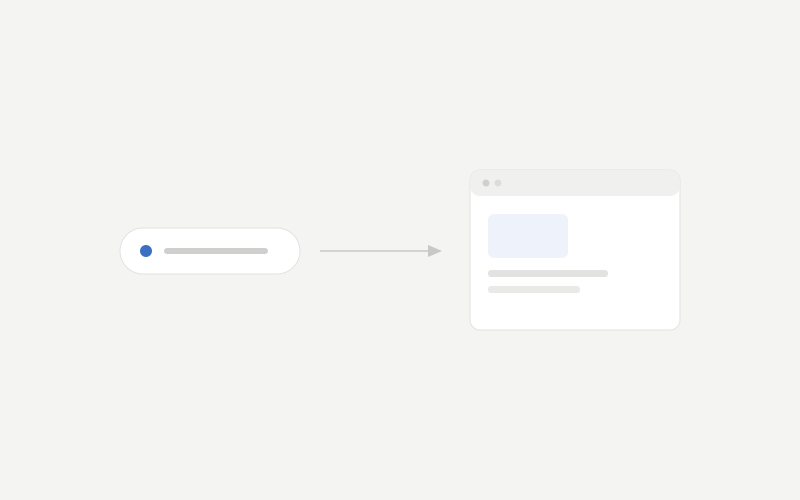
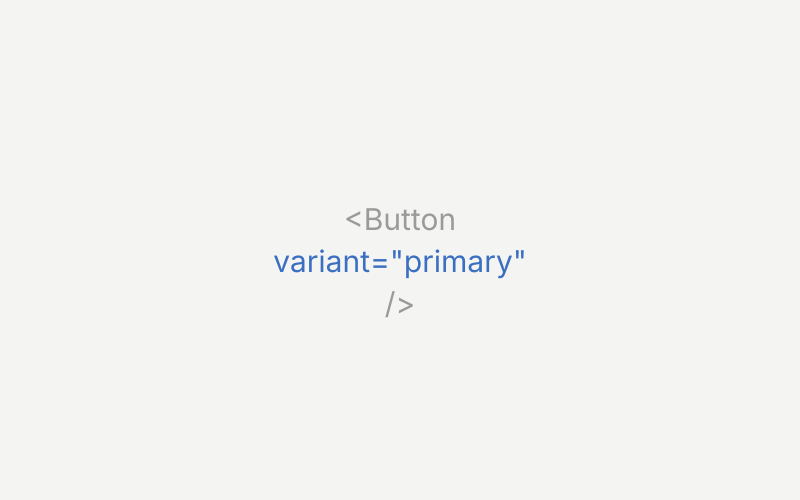
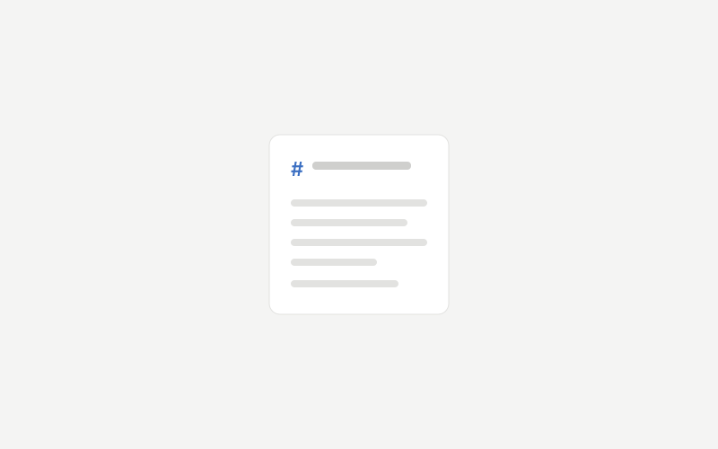
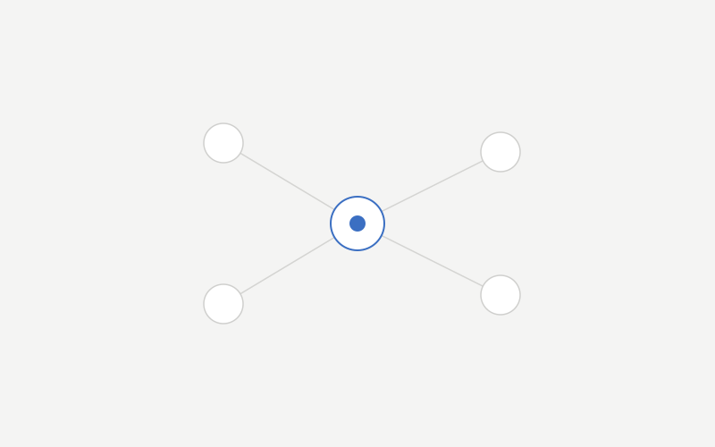
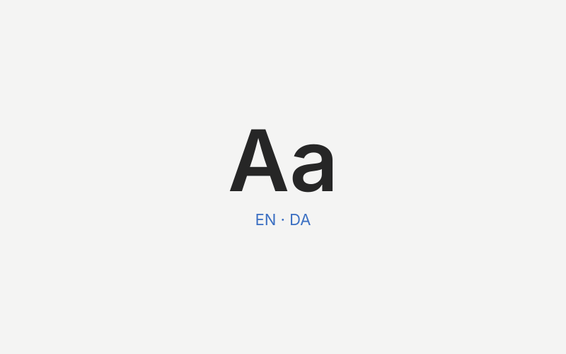
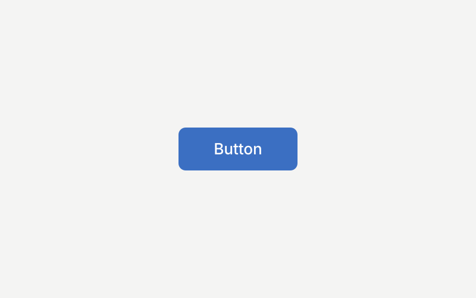
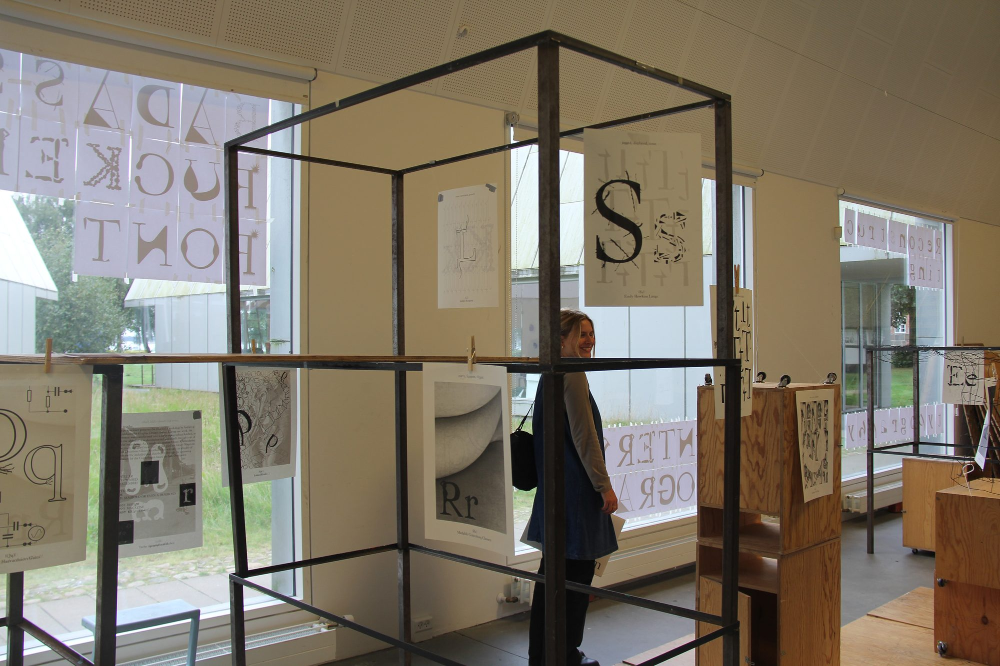

Selected work
01
AI prototyping, democratized
AI enablement
01

02
Designing a design system AI can build with
Design systems · AI
02

03
taco-docs
Documentation
03

04
Designing how a design system collaborates
Design systems
04

05
Systematising product language
Content design
05

06
Building foundational stability
Foundations & tokens
06

Creative & academic
07
Designing for low self-esteem
UX research
07
08
Portable.
Product design
08
09
Typographic kitchen
Exhibition
09

10
Tune
Graphic design
10
11
Flow
Creative book
11

Product designer in Copenhagen, specialising in design systems and UI. I focus on the structures that let quality scale — governance, component architecture, and the processes that hold everything together.
Background in UX research and interaction design. Experienced in stakeholder management, facilitation, and leading design across teams. Half Danish, half English — bilingual with a sharp eye for language.
View / Download CVWork
Product Designer, Design Systems
2022 – Present
Visma e-conomic
Owning and evolving the design system — component architecture, documentation, governance, and cross-team alignment. Driving consistency and quality across product teams.
UX Project Lead
2022
Design Matters
Led design, testing, and QA for Design Matters Plus. Curated content and shaped the end-to-end user experience of the platform.
Freelance Web Designer
2019 – 2021
Designed and built websites in WordPress — from client briefing and scoping through to design and implementation.
Graphic Designer
2020 – 2021
ClickLearn
Created visual assets for conferences, webinars, video, and social media channels.
Student Consultant
2019
Digital Sprint
Month-long design sprint for the Danish Veterinary and Food Administration (Fødevarestyrelsen), delivering rapid digital solutions.
Concept Developer
2017
Copenhagen Creators
Design research, concept development, and low-fidelity prototyping for an app and game studio.
Education
MSc in Digital Design & Interactive Technologies
IT University of Copenhagen
2019 – 2021
BSc in Digital Media & Design
IT University of Copenhagen
2016 – 2019
Economics & Business Administration (Electives)
Copenhagen Business School (CBS)
Autumn 2018
Computational Media (Exchange)
Georgia Institute of Technology (GA, USA)
Spring 2018
Certificates
Subatomic: The Complete Guide to Design Tokens
Spring 2026
Brad Frost
Graphic Design
Autumn 2021
Krabbesholm Højskole
Six-month programme focused on core visual design principles — typography, layout, colour — and tackling complex design challenges across disciplines.
JavaScript Bootcamp
Summer 2019
Barcelona Code School
Intensive two-week course covering JavaScript fundamentals and hands-on application building.
Skills
Tools
Volunteering